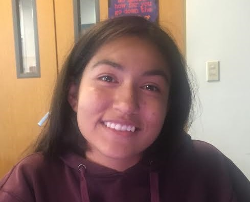

GWA(Girls With Attitude), formed in the summer of 2016, is composed of students from the Girls Who Code Summer Immersion Program. As young women coming into the tech industry, GWA produced a website to inform teenagers about the importance of emotional, physical and mental health. The website "Being A Teenager" helps teens from everywhere overcome stress, sadness and anger with words of encouragement, entertaining videos, informative facts and more.
Alaysia Pearce
Ashley Medina
Diana Morales
Kelly McNamee